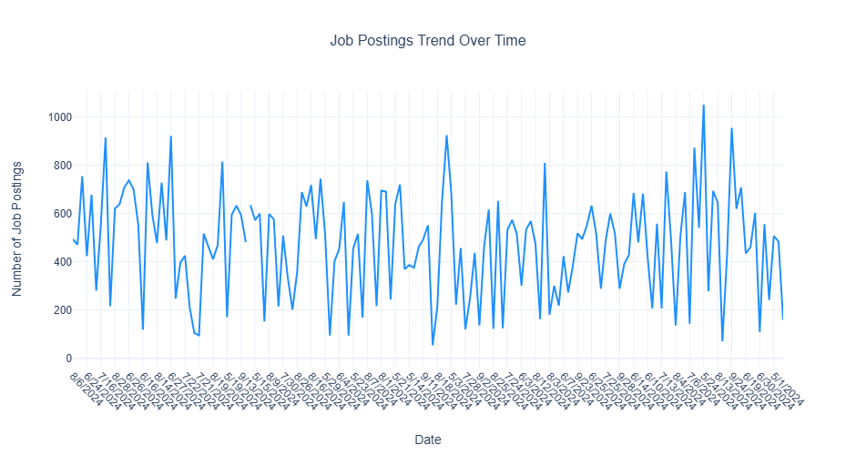
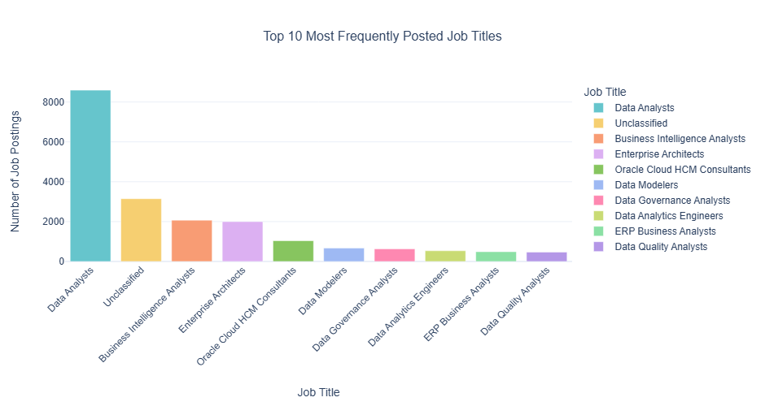
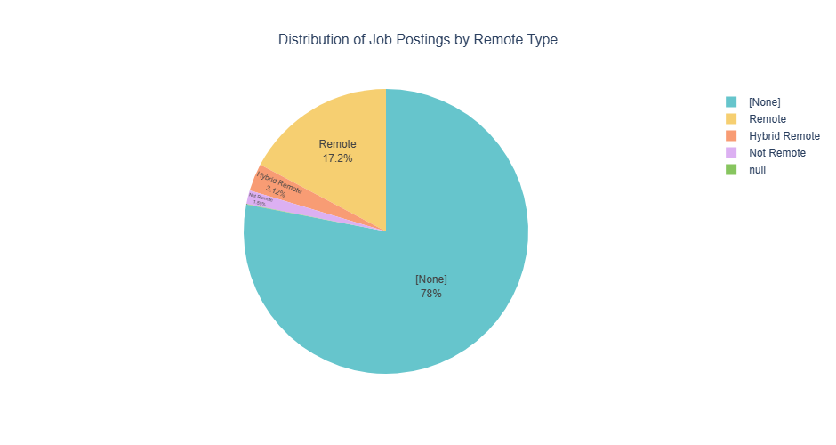

By the end of this lab, you will: 1. Load and analyze the Lightcast dataset in Spark DataFrame. 2. Create five easy and three medium-complexity visualizations using Plotly. 3. Explore salary distributions, employment trends, and job postings. 4. Analyze skills in relation to NAICS/SOC/ONET codes and salaries. 5. Customize colors, fonts, and styles in all visualizations (default themes result in a 2.5-point deduction). 6. Follow best practices for reporting on data communication.
Step 1: Load the Dataset
import pandas as pdimport numpy as npimport plotly.express as pximport plotly.io as pioimport plotly.graph_objects as gopio.renderers.default ="vscode"from pyspark.sql import SparkSessionfrom pyspark.sql.functions import col, count, desc, to_date, split, explode, when, litfrom pyspark.sql.window import Windowimport pyspark.sql.functions as F# Initialize Spark Sessionspark = SparkSession.builder.appName("LightcastData").getOrCreate()# Load Datadf = spark.read.option("header", "true").option("inferSchema", "true").option("multiLine","true").option("escape", "\"").csv("lightcast_job_postings.csv")# Show Schema and Sample Datadf.printSchema()df.show(5)
Unable to display output for mime type(s): application/vnd.plotly.v1+json
Based on the salary distribution boxplot, full-time positions (with ≥32 hours) show the highest median salary and the widest salary range, indicating more variability and potentially higher earning potential compared to part-time employment types. The graph also reveals significant outliers in each employment category, particularly in full-time positions, where several high-salary data points extend well above $400,000, suggesting exceptional compensation opportunities for some full-time roles.
2 Salary Distribution by Industry
Compare salary variations across industries.
Filter the dataset
Keep records where salary is greater than zero.
Aggregate Data
Group by NAICS industry codes.
Visualize results
Create a box plot where:
X-axis = NAICS2_NAME
Y-axis = SALARY_FROM
Customize colors, fonts, and styles.
Explanation: Write two sentences about what the graph reveals.
# Your code for 2nd question herefig = px.box( df_filtered, x='NAICS2_NAME', y='SALARY_FROM', title='Salary Distribution Across Industries', labels={'NAICS2_NAME': 'Industry', 'SALARY_FROM': 'Salary (From)' }, color='NAICS2_NAME', color_discrete_sequence=px.colors.qualitative.Set3, template='plotly_white')fig.update_layout( font=dict(family="Arial, sans-serif", size=12), title_font_size=16, title_x=0.5, xaxis_title_font_size=14, yaxis_title_font_size=14, showlegend=False, xaxis_tickangle=-45, height=600)fig.update_xaxes( title_standoff=25)fig.update_yaxes( title_standoff=25, tickformat='$,.0f')pio.write_html(fig, file='salary_by_industry_boxplot.html')fig.show()
Unable to display output for mime type(s): application/vnd.plotly.v1+json
The box plot reveals substantial salary variations across different industries, with sectors like Professional, Scientific, and Technical Services, Information, and Finance and Insurance showing higher median salaries and more extensive salary ranges compared to industries like Arts, Entertainment, and Recreation or Agriculture, Forestry, Fishing, and Hunting. Additionally, the visualization highlights significant salary outliers in multiple industries, particularly in Professional Services and Information, where some individual salaries extend well beyond $600,000, indicating exceptional compensation opportunities in those sectors.
3 Job Posting Trends Over Time
Analyze how job postings fluctuate over time.
Aggregate Data
Count job postings per posted date (POSTED).
Visualize results
Create a line chart where:
X-axis = POSTED
Y-axis = Number of Job Postings
Apply custom colors and font styles.
Explanation: Write two sentences about what the graph reveals.
df_agg = df.groupBy('POSTED').agg(count('*').alias('Number of Postings'))job_postings_trend = df_agg.toPandas()fig = px.line( job_postings_trend, x='POSTED', y='Number of Postings', title='Job Postings Trend Over Time', labels={'POSTED': 'Date', 'Number of Postings': 'Number of Job Postings'}, color_discrete_sequence=['#1E90FF'], template='plotly_white')fig.update_layout( font=dict(family="Arial, sans-serif", size=12), title_font_size=16, title_x=0.5, xaxis_title_font_size=14, yaxis_title_font_size=14, height=500)fig.update_xaxes( title_standoff=25, tickangle=45)fig.update_yaxes( title_standoff=25)pio.write_html(fig, file='job_postings_trend.html')fig.show()

The line chart demonstrates significant day-to-day volatility in job postings, with daily volumes ranging from around 200 to nearly 1,000 job listings and showing a cyclical pattern that suggests potential weekly or bi-weekly fluctuations in hiring activity. Despite the considerable variations, there’s no immediately apparent long-term upward or downward trend, indicating a relatively stable job market during the observed time period with regular short-term oscillations in posting volumes.
4 Top 10 Job Titles by Count
Identify the most frequently posted job titles.
Aggregate Data
Count the occurrences of each job title (TITLE_NAME).
Select the top 10 most frequent titles.
Visualize results
Create a bar chart where:
X-axis = TITLE_NAME
Y-axis = Job Count
Apply custom colors and font styles.
Explanation: Write two sentences about what the graph reveals.
# Your code for 4th question here# Top Job Titlestop_job_titles = df.groupBy("TITLE_NAME") \ .agg(count("*").alias("Number of Postings")) \ .orderBy(col("Number of Postings").desc()) \ .limit(10) \ .select(col("TITLE_NAME").alias("Job Title"), col("Number of Postings"))fig = px.bar( top_job_titles, x='Job Title', y='Number of Postings', title='Top 10 Most Frequently Posted Job Titles', labels={'Job Title': 'Job Title', 'Number of Postings': 'Number of Job Postings' }, color='Job Title', color_discrete_sequence=px.colors.qualitative.Pastel, template='plotly_white')fig.update_layout( font=dict(family="Arial, sans-serif", size=12), title_font_size=16, title_x=0.5, xaxis_title_font_size=14, yaxis_title_font_size=14, height=500, xaxis_tickangle=-45)fig.update_xaxes( title_standoff=25)fig.update_yaxes( title_standoff=25)pio.write_html(fig, file='top_10_job_titles.html')fig.show()

The bar chart shows Data Analysts as the most in-demand job title, with significantly more job postings compared to other roles, followed by Unclassified positions and Business Intelligence Analysts. The visualization highlights the strong market demand for data-related professional roles, with data analysis, business intelligence, and enterprise architecture positions dominating the top of the job posting rankings.
5 Remote vs On-Site Job Postings
Compare the proportion of remote and on-site job postings.
Aggregate Data
Count job postings by remote type (REMOTE_TYPE_NAME).
Visualize results
Create a pie chart where:
Labels = REMOTE_TYPE_NAME
Values = Job Count
Apply custom colors and font styles.
Explanation: Write two sentences about what the graph reveals.
# Your code for 5th question here# Remote Type Countsremote_type_counts = df.groupBy("REMOTE_TYPE_NAME") \ .agg(count("*").alias("Number of Postings")) \ .select(col("REMOTE_TYPE_NAME").alias("Remote Type"), col("Number of Postings"))fig = px.pie( remote_type_counts, values='Number of Postings', names='Remote Type', title='Distribution of Job Postings by Remote Type', color_discrete_sequence=px.colors.qualitative.Pastel, template='plotly_white')fig.update_layout( font=dict(family="Arial, sans-serif", size=12), title_font_size=16, title_x=0.5, height=500)fig.update_traces(textposition='inside', textinfo='percent+label')pio.write_html(fig, file='remote_type_distribution.html')fig.show()

The pie chart shows that a substantial majority of job postings (78.1%) are categorized as None, which likely indicates there are not remote jobs, while only 17.2% of postings are explicitly labeled as “Remote” and a small percentage (3.7%) are classified as “Hybrid Remote”. This distribution suggests traditional work arrangements still dominating the job posting landscape.
6 Skill Demand Analysis by Industry (Stacked Bar Chart)
Identify which skills are most in demand in various industries.
Aggregate Data
Extract skills from job postings.
Count occurrences of skills grouped by NAICS industry codes.
Visualize results
Create a stacked bar chart where:
X-axis = Industry
Y-axis = Skill Count
Color = Skill
Apply custom colors and font styles.
Explanation: Write two sentences about what the graph reveals.
df_with_skills = df.withColumn("SKILLS_NAME", when(col("SKILLS_NAME").isNull(), lit("")) .otherwise(col("SKILLS_NAME")))# Explode skills and filter out empty skillsskills_by_industry = df_with_skills.select("NAICS2_NAME", explode(split(col("SKILLS_NAME"), ",")).alias("SKILLS_NAME"))# Top Skillstop_skills = skills_by_industry.filter(col("SKILLS_NAME") !="") \ .groupBy("SKILLS_NAME") \ .agg(count("*").alias("skill_count")) \ .orderBy(col("skill_count").desc()) \ .limit(5)top_skills_list = [row.SKILLS_NAME for row in top_skills.collect()]skills_summary = skills_by_industry.filter(col("SKILLS_NAME").isin(top_skills_list)) \ .groupBy("NAICS2_NAME") \ .pivot("SKILLS_NAME", top_skills_list) \ .agg(count("*")) \ .na.fill(0) skills_summary_pd = skills_summary.toPandas()skills_summary_melted = skills_summary_pd.melt( id_vars=['NAICS2_NAME'], var_name='Skills', value_name='Number of Job Postings')fig = px.bar( skills_summary_melted, x='NAICS2_NAME', y='Number of Job Postings', color='Skills', title='Top Skills Demand Across Industries', labels={'NAICS2_NAME': 'Industry', 'Number of Job Postings': 'Number of Job Postings'}, color_discrete_sequence=px.colors.qualitative.Pastel, template='plotly_white')fig.update_layout( font=dict(family="Arial, sans-serif", size=12), title_font_size=16, title_x=0.5, xaxis_title_font_size=14, yaxis_title_font_size=14, height=600, xaxis_tickangle=-45, legend_title_text='Skills')pio.write_html(fig, file='skills_by_industry.html')fig.show()
Unable to display output for mime type(s): application/vnd.plotly.v1+json
The graph reveals that Professional, Scientific, and Technical Services have the highest number of job postings, with a particularly strong demand for skills like Communication, Data Analysis, and Management. Across different industries, there’s a consistent need for core skills such as Communication and Management, though the relative importance and volume of skills vary significantly between sectors like Public Administration, Real Estate, and Manufacturing.
7 Salary Analysis by ONET Occupation Type (Bubble Chart)
Analyze how salaries differ across ONET occupation types.
Aggregate Data
Compute median salary for each occupation in the ONET taxonomy.
Visualize results
Create a bubble chart where:
X-axis = ONET_NAME
Y-axis = Median Salary
Size = Number of job postings
Apply custom colors and font styles.
Explanation: Write two sentences about what the graph reveals.
The plot indicateds that the dataset has only one onet_name - Business Intelligence Analysts.
8 Career Pathway Trends (Sankey Diagram)
Visualize job transitions between different occupation levels.
Aggregate Data
Identify career transitions between SOC job classifications.
Visualize results
Create a Sankey diagram where:
Source = SOC_2021_2_NAME
Target = SOC_2021_3_NAME
Value = Number of transitions
Apply custom colors and font styles.
Explanation: Write two sentences about what the graph reveals.
# Your code for 8th question here# Count transitionstransitions = df.groupBy(['SOC_2021_2_NAME', 'SOC_2021_3_NAME']) \ .agg(count('*').alias('Value')) \ .toPandas()# Get unique labelssource_labels = transitions['SOC_2021_2_NAME'].unique()target_labels = transitions['SOC_2021_3_NAME'].unique()source_labels = source_labels[source_labels !=None]target_labels = target_labels[target_labels !=None]all_labels = np.unique(np.concatenate([source_labels, target_labels]))# Create label to index mappinglabel_to_index = {label: index for index, label inenumerate(all_labels)}# Add source and target indicestransitions['source_index'] = transitions['SOC_2021_2_NAME'].map(label_to_index)transitions['target_index'] = transitions['SOC_2021_3_NAME'].map(label_to_index)# Create Sankey Diagramfig = go.Figure(data=[go.Sankey( node =dict( pad =15, thickness =20, line =dict(color ="black", width =0.5), label = all_labels, color ="blue" ), link =dict( source = transitions['source_index'], target = transitions['target_index'], value = transitions['Value'] ))])# Update layoutfig.update_layout( title_text="Career Pathway Transitions between SOC Job Classifications", title_font_size=16, title_x=0.5, font=dict( family="Arial, sans-serif", size=12, color="black" ), height=600, width=1000, template='plotly_white')# Save and show the figurepio.write_html(fig, file='career_pathway_sankey.html')fig.show()
Unable to display output for mime type(s): application/vnd.plotly.v1+json
It indicates that all Computer and Mathematical Occupations in 2021_2 changed to Mathematical Science Occupations. Perhaps the data were incorrectly entered with the same values, or a name change occurred.